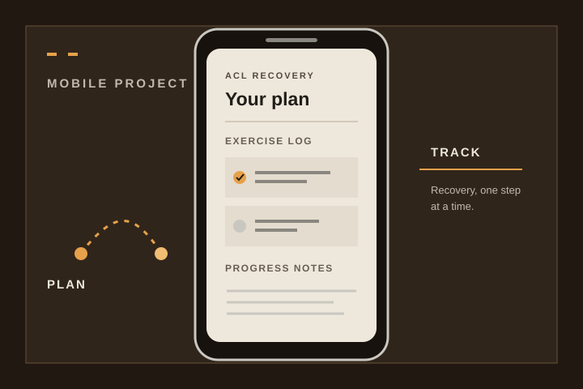

Flutter · Health & recovery
ACL Recovery Coach
A mobile companion for people recovering after ACL reconstruction. It helps users record rehabilitation status, follow a criteria-based exercise plan, and track progress. The app supports—but does not replace—guidance from a surgeon or physical therapist.
FlutterRehabilitation trackingProgress logging
View project on GitHub